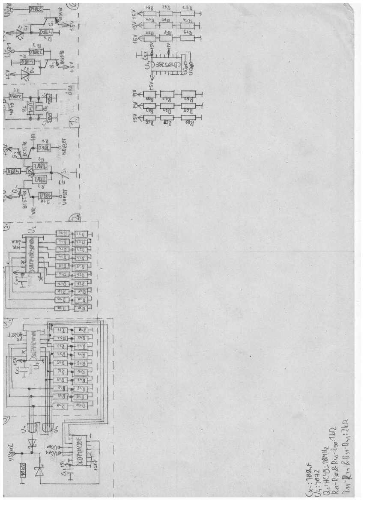

Nos arra próbáltam megoldást keresni, hogy (ne kelljen új nyákot rendelni) az LM311P chipeket miképp lehet a legpontosabbá tenni, milyen kallibrálási megoldásokat használhatok, viszont nem sikerült találni egyet sem. Lett egy majdnem kielégítő megoldás, méghozzá az, hogy mind a BALANCE, mind pedig a BAL/STROBE tüskét 5V-os potenciálra hozom. Ez próbapanelen működött (ráadásul olyan chippel, amit az áramkörből vettem ki); 6mV-os különbséget is képes volt észrevenni. Sajnos a szinkronjelgenerátorban ez nem vezetett megoldásra. Olyan gyanúm áll fenn, hogy (a VSYNC jelnél van ez) 0mV és 9mV közt kell különbséget mérni, és mindkettő potenciál nagyon közel van a 0V-hoz.
A feszültségösszehasonlítók igazából különleges huzalozású műveleti erősítők. Az a baj velük, hogy a bemeneteiken minimum 0,65V-ra van szükség ahhoz, hogy értelmes eredmény álljon a kimeneten. Ez arra enged engem következtetni, hogy az LM311P-nél is pontosan ugyanez a fennakadás. Nincs meg a 650mV előfeszítés, így nem üzemel az alkatrész jól.
Az új kapcsolási rajzon ezt eddig úgy orvosoltam, hogy a VSYNC-et digitálisan mértem össze az órával, viszont egyik lényege ennek a készüléknek, hogy minél kisebb legyék, így hát a digitális alkatrészeket továbbra is el fogom hanyagolni. Meg ráadásul drágák is; ha elromlik, a digitális összehasonlító IC (CD74HC85E) hestore.hu-n 300Ft, ami általános célú analóg IC-khez képest méregdrága.
Szóval, a terv: az összehasonlítókon a bemeneti feszültségeket kicsit megemelem, mindegyiket mondjuk 1V-tal, hogy biztos jól elő legyenek feszítve, de mégse foglaljon le a feszültségtartományból nagyon sokat.
